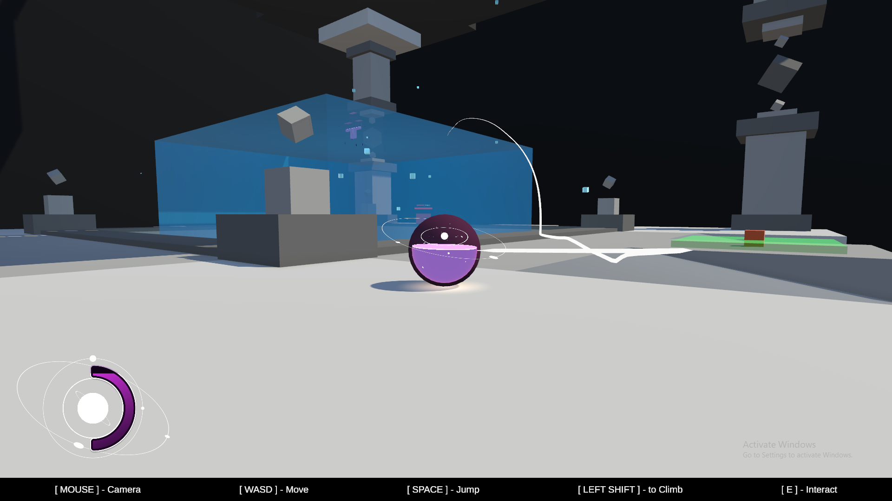
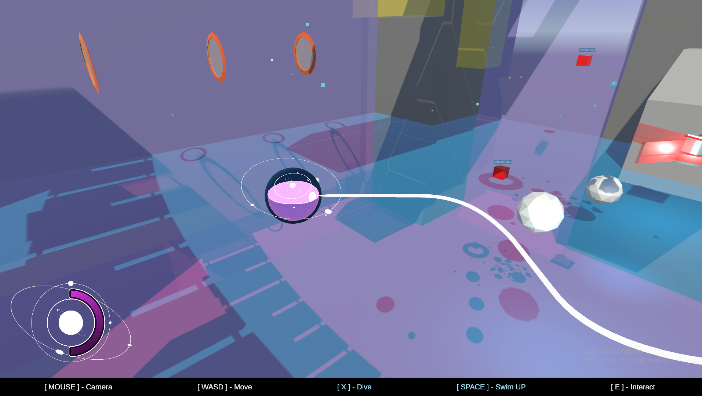
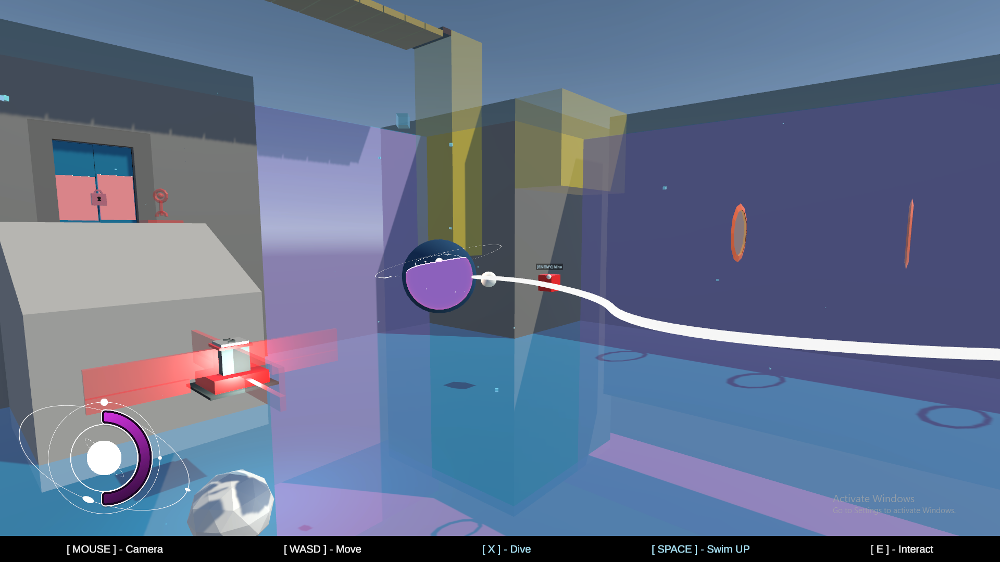
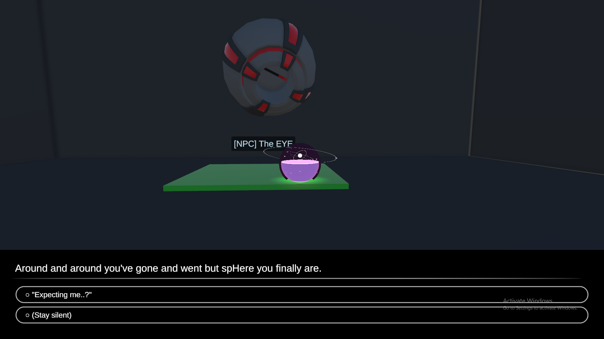
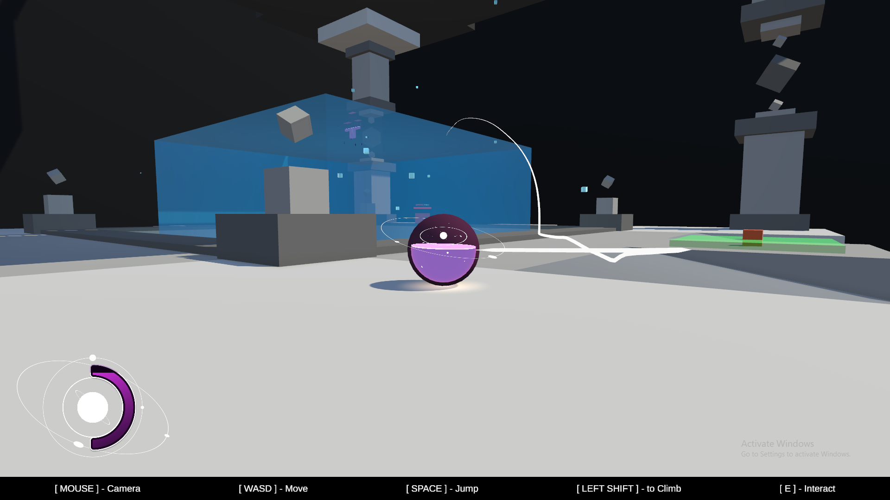
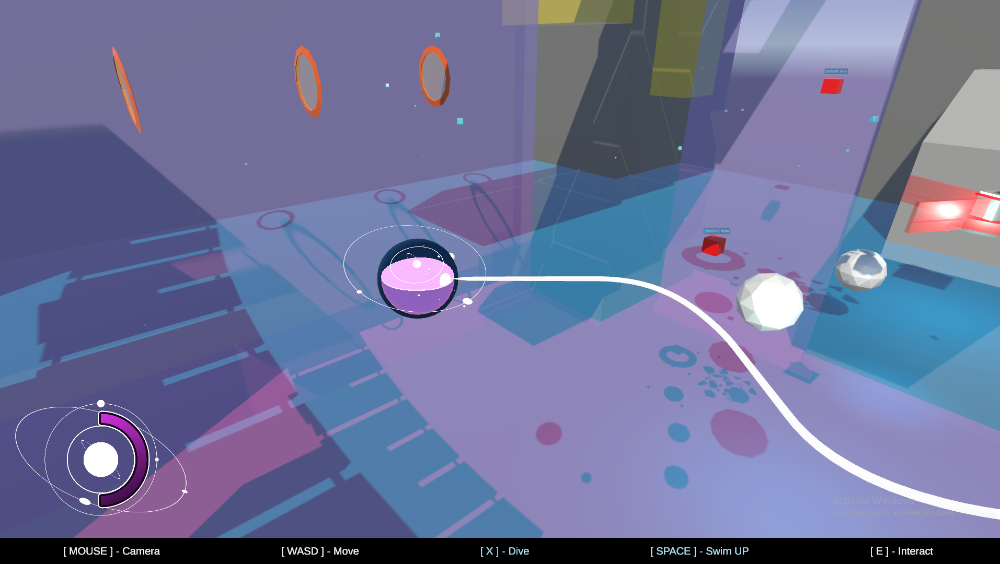
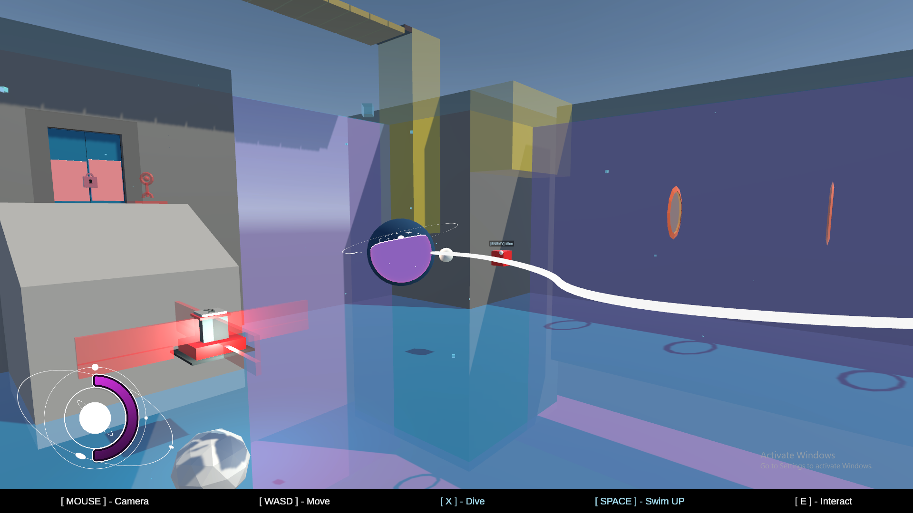
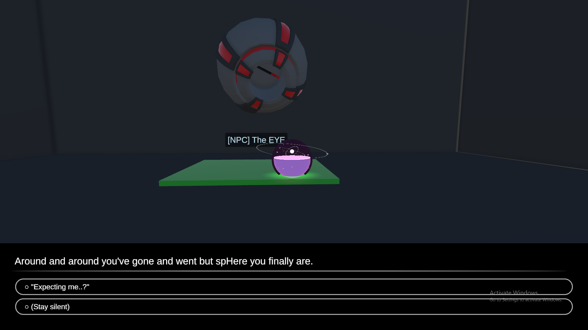

spHERE WE GO!
Solo Project
Engine: Unity
Duration: 4 Weeks
Status: Prototype available on Itch.io
Download from Itch.io
A fun little 3D platformer where you are a sphere!
Roll around or up walls, and swim in the water like the majestic orb you were always meant to be!
Also avoid the evil red cubes.
spHere we go is the project that made me realize I'm really not meant to be a level designer.
I loved working on designing and implementing the player movement, the different enemies and features, but when it came to actually
designing the space that would let the player play with and experience those features? HELL.
A prototype made for a Intro to C# course at Futuregames.
Prototype Features:
Player movement
Enemy AI
Interaction System
Dialogue System using Ink
Key rebinding

 






